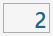

La page Liste de programmation des fichiers ISO permet d’exécuter plusieurs programmes consécutivement, créés auparavant avec des programmes CAD-CAM, pour les machines à deux zones de travail, les machines Twin ou les programmes comportant plusieurs usinages créés alors que la machine est déjà en fonctionnement.

Barre supérieure
La barre supérieure affiche des informations permettant de surveiller l’avancement de la liste

  | Activation/Désactivation de la Liste des programmes ISO |
  | État d’exécution de la liste |
  | Barre de progression de la liste |
Barre de progression de la liste
Cette barre de progression fournit des informations sur l’état d’exécution du programme ISO en cours, tout en donnant un aperçu général du programme suivant dans la liste et de celui qui a déjà terminé la phase d’usinage et est passé au déchargement.

Dans l’image précédente, aucun programme en phase de déchargement n’est encore visible, car l’exécution de la liste n’a pas été lancée et aucune pièce n’a encore été traitée. À l’inverse, s’il n’y a qu’un seul fichier ISO dans la liste ou si l’usinage a été lancé et que tous les autres fichiers ont déjà été exécutés, la section Suivant est vide.
Pendant l’exécution, l’état d’avancement du programme est affiché en temps réel, comme illustré ci-dessous.

Menu latéral
Sur le côté droit du panneau des ventouses se trouvent plusieurs boutons relatifs à la gestion des différents fichiers de la liste des programmes.
 | Exécuter le programme suivant |
Déplacer l’élément sélectionné vers le haut | |
 | Déplacer l’élément sélectionné vers le bas |
 | Supprimer l’élément sélectionné |
 | Panneau ventouses |
Panneau Ventouses
Il est possible d’utiliser les ventouses en mode manuel pour déplacer des pièces d’une zone de travail à une autre.

Boutons des ventouses
 | Activation / désactivation des ventouses |
 | VENTOUSES : MONTER - Stationnement des ventouses |
 | VENTOUSES : DESCENDRE - Préparer les ventouses |
 | SOULEVER LA PIÈCE : RELÂCHER - Déchargement de la pièce |
 | SOULEVER LA PIÈCE : DÉMARRER - Levage de la pièce |
  | SOUFFLAGE - Commande de soufflage |
  | VIDE - Commande de la pompe à vide |
Conditions de sécurité
Faire particulièrement attention aux ventouses actives pendant le levage et s’assurer que les zones utilisées sont suffisantes pour soulever la pièce à manutentionner. Toujours utiliser la plus grande surface de vide disponible pour saisir la pièce et vérifier que le matériau ne présente aucun défaut ni aucune rupture susceptible de créer des dangers ou des problèmes de fonctionnement de la machine.
Une fois la pompe à vide activée, sa désactivation n’est autorisée qu’au moyen des fonctions automatiques prévues à cet effet. L’appui sur le bouton de réinitialisation ou sur le bouton d’arrêt d’urgence n’a aucun effet sur la pompe à vide, qui continue de fonctionner. L’arrêt de la pompe peut être forcé à l’aide du bouton prévu à cet effet dans la page « Commandes supplémentaires ».
Dans les procédures automatiques, avant de soulever la pièce, l’état du vide est contrôlé par un capteur dédié : si une valeur de vide suffisante n’est pas détectée, l’alarme « manque de vide » apparaît. La pompe reste active jusqu’à ce que le vacuostat détecte une valeur correcte, sauf si elle est désactivée depuis la page « Commandes supplémentaires ».
Une coupure de l’alimentation de la pompe à vide entraîne une perte rapide du vide et, par conséquent, la chute du matériau soulevé par les ventouses.
Barre inférieure
Dans la partie inférieure de la barre sont affichées plusieurs fonctions relatives à l’exécution de la liste des programmes ISO ainsi que la surveillance de l’outil et de la dalle.

Gestion de l’exécution de la liste
Dans la partie inférieure se trouvent également les deux boutons relatifs aux modes d’exécution des programmes :
  | Manuel / automatique |
  | Unique / suivant automatique |
Surveillance de la dalle et de l’outil
Au centre et à droite de la barre inférieure, l’opérateur peut configurer des contrôles périodiques du diamètre de l’outil en définissant des contrôles à intervalles déterminés selon le nombre de cycles effectués.

 | Nombre de cycles entre les palpages du disque |
|---|---|
 | Nombre de cycles avant le prochain palpage |
 | Diamètre de l’outil |
 | Épaisseur de la dalle |
Exécution de la Liste des programmes ISO
Si la Liste des programmes ISO est désactivée, l’interrupteur en haut à droite du panneau apparaît éteint ; il est alors possible d’activer la fonction simplement en cliquant sur ce bouton.
La liste des programmes ISO s’allonge automatiquement à mesure que des ISO sont générés dans Parametrix ; l’opérateur peut néanmoins repositionner les éléments dans la liste ou les en supprimer selon ses besoins.
Avant de lancer l’exécution de la liste, l’opérateur peut définir le nombre de cycles qui seront effectués entre les opérations de palpage de l’outil.
Le nombre de cycles restant avant le prochain palpage est alors mis à jour et affiché.
L’opérateur lance l’exécution de la liste des programmes en appuyant sur le bouton « Démarrer cycle ». Les programmes sont ainsi exécutés en séquence, avec affichage simultané du programme en cours, de celui qui sera exécuté ensuite et de celui déjà terminé.
Si le mode d’exécution des programmes est réglé sur Manuel et Unique, l’exécution de la liste s’interrompt à la fin du programme en cours, juste après la préparation du programme suivant à exécuter.
Dans ce cas, l’opérateur peut appuyer sur le bouton Suivant lorsqu’il le juge opportun et poursuivre l’exécution en appuyant de nouveau sur le bouton « Démarrer cycle »